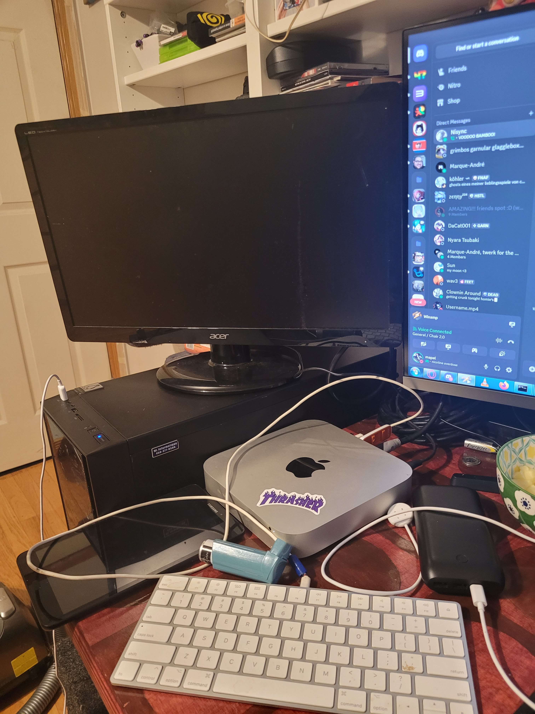

hey. welcome to my site.
Sup im QuantumMapleQC Known for Creating things and being stupid in general! Currently diagnosed with Autism / ADHD / PTSD.
i host most of my stuff from my mac mini in my bedroom, right next to a tiny monitor. i always check temps to make sure things stay cool lol.
who is lilou?
Lilou is a Fursona i created couple months ago and i use it as my main PFP on almost everything.
Most questions i get asked:
"Why are you into furry fandoms?"
furries are basically people who dress up or take on animal personas, usually for fun or creative reasons. for me, it just feels right. like if i ever died and got the choice to be reborn, i’d 100% come back as a snow fox they’re calm, beautiful, and honestly just adorable as hell. it fits who i am.
the furry community has always been something good in my life. yeah, there’s some messed up parts out there like in any big group stuff i’m totally against like pedos or weird babyfur spaces but if you stay away from those corners, what’s left is full of kind, funny, and creative people. that’s the part i care about, and that’s where i feel at home.
for me, being part of the furry world isn’t just about fun, it’s a coping mechanism. i’ve been through some heavy stuff, like traumatic family issues and people being violent towards me. it got so bad that i had to leave school for good, and all that led to me developing ptsd. having something like furries a community and a way to express myself helped me survive all that. it’s a space where i can be happy, be myself, and find comfort when everything else feels overwhelming.
who is nyara tsubaki?
nyara tsubaki is my anime oc and also the name of a bot i made. she’s the face of the tsubaki project a dumb little discord bot that me and whatdidyouexpect threw together just for fun. not for anything serious. she learns from what you say (sorta), and answers in her own weird way.
i run her off my mac mini at home, along with some other stuff. she's more than just code to me kinda a mix of a comfort character, digital assistant, and one of those brain characters that won’t shut up. you get it.
"a silly, stupid ai friend that learns from what you say."
made by me and whatdidyouexpect.
tsubaki project: github.com/QuantumMapleQC/Tsubaki-Project
nyara (side thing): github.com/QuantumMapleQC/nyara
she's broken and will yap a lot but shes like that and i dont think i will update her.
